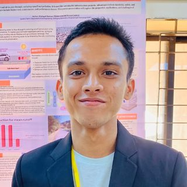
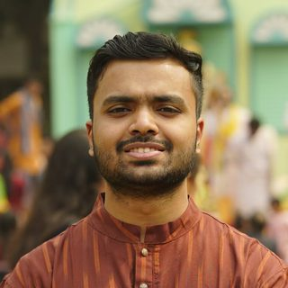

2025
Completed
The first cohort, and the one that established how we work: an open call, a scored application, then matching on what mentors and mentees each said they wanted.
- Mentors
- 17
- Mentees
- 24
Cohorts
We started in early 2025 with a first cohort and completed a full cycle with them. The second cohort was matched in September 2026 and is running now.
The first cohort, and the one that established how we work: an open call, a scored application, then matching on what mentors and mentees each said they wanted.
The second cohort. Nearly twice the mentees, and wider: quantum nanophotonics, river morphology and urban transport joined a roster that had been mostly computing and materials.
Mentees apply through an open call and are assessed on aptitude, research potential, and how seriously they engage with the application. Mentors and mentees both state preferences, and pairs are matched on overlapping interests rather than assigned at random. Most mentors take one or two mentees; a few take four or five.
Two mentees from the first cohort came back for a second cycle with a new mentor. Mentors are spread across universities and research organisations in the United States, Canada, the Netherlands, Australia and Bangladesh. Alongside the mentoring, a second thing has been quietly growing: a community among the mentors themselves, who increasingly help each other with their own research.
Mentee experiences
A selection of projects from the 2025 cohort, and what the students made of them. These are some of the experiences mentees have shared with us, not a full record of the year.
Physical Sciences · Independent University, Bangladesh
Participating in this mentorship program and working with Dr. Syeda Lammim Ahad was the best decision of my entire life.
Mathematics · Kabi Nazrul Government College
An incredible journey that expanded my understanding of how we use complex simulations to unlock the mysteries of the universe. It strengthened my analytical skills and ignited a new passion for exploring the cosmos through data.
Software Engineering · University of Dhaka
It played a pivotal role in introducing me to the world of research. Before the program I had little understanding of how research actually worked; my mentor offered insightful guidance and encouraged me to explore new concepts.
Electrical and Electronic Engineering · BUET
It taught me how to effectively formulate problems and break a project down into clear, actionable steps. I deeply appreciate my mentor's guidance in identifying the key challenges along the way.
Computer Science and Engineering · BUET
Coming from a non-biology background, I was new to computational biology. My mentor guided me through the basics and helped me build a strong foundation — regular meetings and discussions meant I could independently choose a project and start working on it.
Civil Engineering · Rajshahi University of Engineering and Technology
The BSRI Mentorship Program has been a game-changer in my research and higher studies journey. My mentor's guidance and insightful advice have truly propelled my growth.

Civil Engineering · Chittagong University of Engineering and Technology
I learned how to truly enjoy reviewing research papers, what to look for while formulating a research framework, and how to think more critically as an early-stage researcher.

Civil Engineering · BUET
I am working through the data preprocessing stage now, following my methodology framework and my mentor's guidance. I am hopeful the results will be good.